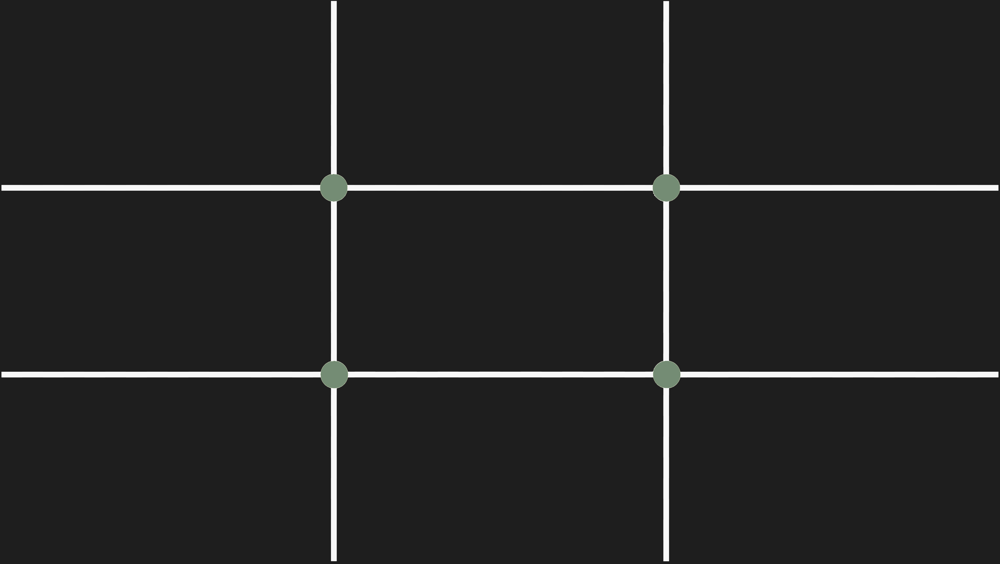

Introduction to the Rule of Thirds
The rule of thirds is a composition technique. It divides the frame into a grid with two equally spaced horizontal lines and two equally-spaced vertical lines. The method is to align the subject or main elements of your image on the 4 intersecting points, or along the vertical or horizontal lines.
If you’re new to art or photography, the Rule of Thirds is a helpful basic composition technique so you can create compelling images. Even though it is called the Rule of Thirds, it is better to consider it as more of a guide than a hard rule you must follow. There are no fixed rules as to what will make a perfect composition, because this is subjective.
The Imaginary Rule of Thirds Grid
Start by visualizing an imaginary grid that divides the image area into nine equal horizontal and vertical quadrants. The grid lines over the image are like a tic-tac-toe board. Place your subject and important elements of your image along the grid lines or intersection points.
Whatever format your sensor is,
- Full-frame 36X24m,
- APS-C
- Micro 4/3
- Square
- Or any other dimension
An evenly spaced grid of horizontal and vertical lines can divide it and guide the placement of your subject. Often cameras have a grid overlay that can be turned on or off for the viewfinder and monitor. These can be helpful when you first begin to experiment with the rule of thirds. This is because you can see the location of the four intersections of the grid.
You do not need to apply the rule of thirds, or any other composition rule, rigidly. These are meant to help guide you. If you can get the subject of your image framed so it’s close to one of the intersections, but not right on it, this will not matter. Don’t stress over it.

- Using the Rule of Thirds in Portraiture
- The Rule of Thirds and the Horizon
- Use the Rule of Thirds with a Moving Subject
- Remember, The Rule of Thirds is a Technique
- Be Flexible with the Rule of Thirds
Applying the rule of thirds to portraits can be done in many creative ways. You can align the person’s eyes along the top or bottom horizontal lines with their nose on the vertical. This works well for a close portrait. For a half or full body portrait, you can place them on the left or right vertical line. Have the person face into the two-thirds portion of the photo. In images like this their gaze points to the empty space or some other elements that may be in your composition.
For outdoor portraits, you might use a tree or another person on the other vertical third line to bring balance to your composition. You can use many things to position on the other thirds line to bring balance to your photos.
When including a horizon in your composition, avoid splitting your image in two. Place the horizon either in the top or bottom third of the image. Your photos will look much better if the horizon is positioned above or below the middle of the compositions. While you design compositions that include a horizon, keep in mind other elements that will be included in your photograph. How can you use these points of interest and include them in your rule of thirds compositions? Placing the horizon on one of the thirds lines is a good starting point. If you can also include something else in the scene so it’s along one of the third lines or one of the points of the rule of thirds grid, do so. This will be a strong focal point of your landscape and create a stronger design in your composition.
When you photograph something moving, like a cyclist, place it so two-thirds of the frame is in the direction your it’s moving towards. Doing this will give your viewer the perception that your subject has room to move.
What you are taking a photograph of will appear to be moving into the empty area of the two thirds. This helps make the illusion of movement stronger. Again, don’t be conformed to use the rule of thirds like this. Sometimes you can place a moving subject on one intersection point so it appears to be moving out of the photo. This invokes a whole different image in people’s minds about the photo.
As mentioned, the rule of thirds is a technique that best used as a guide, rather than a strict rule. It is simply a tool to help you compose your photographs. Look at each scene you want to photograph. Think about how best to compose all the elements before you. Maybe there is only one thing you want to take a photo of. This will be easy to use the rule of thirds to compose, but that may not result in the most creative composition.
The Rule of Thirds is really about balancing the proportion of subjects and interesting elements in your image. It’s drawing the viewer’s attention to your subject. If the rule of thirds does not do this, think of composition rules or techniques that could help you take a more interesting photograph.
Learning the Rule of Thirds and gaining an understanding the principles behind the rule will enable you to know when to use it, and when to break it. Sometimes photographs will work better without applying the rule of thirds.
Once you have taken a lot of photographs using the rule of thirds you will develop a feel for when to use it. You will also learn when to apply one of the other rules of composition. Practice is key. Take your time and take a lot of photographs. Not randomly, but with purpose. Don’t only use the rule of thirds on every photo, but try other composition rules. Compare the images and decide which of the guidelines you prefer for each photo.